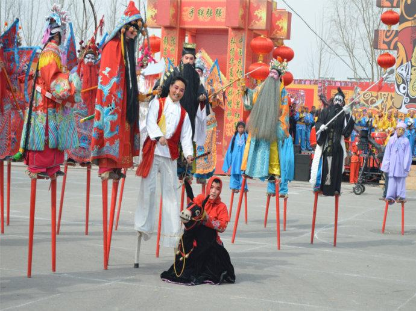
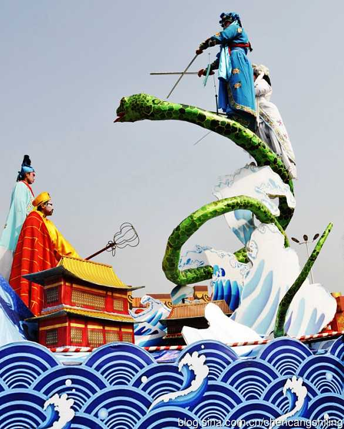
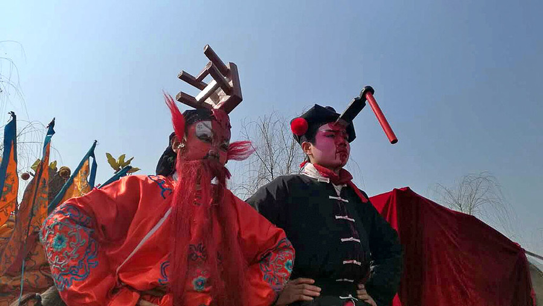

宝鸡民俗文化是黄河流域华夏文明的重要组成部分，深深打上了周秦文明的印痕，是生于斯、长于斯的宝鸡人恪守千年做人做事的规矩。在宝鸡这片沃土上，习以为常的生活习俗，广为流传的民间艺术，由于“熟视”而变得“无睹”。
要说宝鸡民俗，就要说一说关中八大怪！
关中八大怪是指陕西省的关中地区（大致包括西安、宝鸡、咸阳、渭南、铜川，秦岭以北，黄土高原以南）出现的八种独特的传统民风民俗。由于气候、经济、文化等多方面原因的影响，关中地区在衣、食、住、行、乐等方面，形成了一些独特的方式。有着丰厚历史文化积淀的陕西关中地区，沿袭历史民俗，形成了生动有趣“八大怪”，以其“古风古韵古长安”的独特魅力，成为外地游人探寻的一大热点。
值得一提的是，虽然“关中八大怪”有时被称作“陕西八大怪”，但这是不完全合理的。实际上“陕西八大怪”中的风俗仅出现在关中一带，在陕西的大部分地区并非如此。陕西省地理纬度跨 度极大，从北至南存在陕北（黄土高原为主）、关中（渭河平原为主）、陕南（以秦岭以南的汉水流域为主）三大自然条件、文化差异巨大的区域。以关中一地的风俗概括整个陕西，存在以点概面的概念缺陷，亦多表述为“关中八大怪”以去除歧义。
典故一：《史记》中记载荆轲刺秦王，始皇帝就是席地而坐才无法拔剑，逃避中又忘记拔剑，只好绕拄周旋。
典故二：东晋有个“身无长物”的典故，说的也是席地而坐的风俗。此风尚的转变应在晋以后，关中地区基本保持了“坐”的本意，只是姿势稍有改变，膝盖不着地了，大腿压在小腿肚子上，就变成为蹲姿，于是乎想蹲就蹲，此风尚也就世袭了下来。 关中“蹲景”。
“蹲景”成为关中地区特别是农村最有名的亮点，这一怪独步天下，关中人的“蹲景”是地球上的绝版。有的人蹲半天腿不酸腰不痛，实属一种硬功夫。蹲是讲功夫的，只有长年累月的历练，才能长蹲而心静气闲，不累不乏。“蹲”的人已经很少了，但偶尔会在西安、咸阳等站牌前看见部分“蹲”下来等车的关中人。关中人把蹲叫圪蹴，历史可以追溯到遥远的春秋时期。关中人喜欢蹲是从古文的“坐”演变而来凳子不坐蹲起来的。古人“坐”的本意就是跪，将膝盖并直端坐于席上，屁股的重量全压在双脚后跟上。
传统的中国家居一般都是“人”字型结构，关中地区把这种房子叫“安间”房，又叫上房。里面住着主人和老人，结构都是厅房、两边是卧室。 一个院落除了上房还有偏房，在关中叫厦子房，房子的结构是“人”字的一半，就是半边盖的“怪”房子。
为什么要把房子盖一半？首要因素就是贫穷。原来这种半边盖的房子都是土木结构，能节约大量的木材，实现了关中人少木多土的盖房理念。传统的关中院落进门有一道叫照壁的墙，往里左右都是厦子房，最里面是安间正房。关中有顺口溜“有钱住北房，避风又向阳。”北房是指坐北朝南的房子，一般都是安间房，也有根据院子走向盖的厦子房。这种格局的四合院是关中居民的主流。
关中地区是中华文明的摇篮，文明长大了，摇篮破损了。裸露的黄土地少了绿装，虽有南山秦岭，也无法满足千万居民的家住、厨房、储藏等需求用房。聪明的关中农民因地制宜盖起厦子房，利用黄土垒起三面土墙，朝院子一面留门窗，房顶只需少量的大木头做檩、梁，对做椽子小木头要求也低，三面土墙中还有一面利用了围墙，这样就节省院落的空间，解决了用房不足的问题。“房子半边盖”是关中一大景观，也是民生低下的产物，这种房子光线充足，就是通风不畅。农村都盖预制板的房子，建筑材料的革命改变了千年的习惯，半边盖的房子越来越少了。
一般人说“房子半边盖”是取肥水不外流之意，这种房檐水都滴进自家院落，可以解决缺水的问题。但是关中人不用窖水，也没收集雨水的风俗，这种说法只是附托之词，不足为信。（此说有误，关中缺水人尽皆知，为了缓解缺水的问题，关中人很多地区都是收集屋顶流下的雨水到窖里，需要的时候在用“楼楼”把水从窖里打起来存放在瓮里）。
这一怪很多地区都有，只是在关中地区现象更突显，人情味也更浓郁。“两亩地一头牛，老婆孩子热炕头”是关中男人的写照，它的正面意思是关中男人恋家恋婆娘，在“玩龙玩虎不如玩黄土”的小农时代，这种思想也算正统。既然关中男人还不错，那么，这里的姑娘自然爱嫁当地郎了。配合这一观念的还有这里的地理优势，八百里秦川自古都是自给自足的宝地，风调雨顺，物产丰富，缺灾少害。所以，民殷实而安于现状，不思外出谋生。
在关中风俗中这一怪最好解释了。过去人的生存环境差，黄土高原上风刮尘扬，烈日毒辣，妇女们出门干活串户没个遮蔽可不行，顶块手帕不能算怪吧？ 遮阳伞、防晒霜、口罩、墨镜是现代女性的生活必需品，过去的关中女人没这样的条件，她们生活中有一块整端漂亮的布做手帕就不错了。走亲戚，回门子（回娘家），下地干活时这个自制的手帕就发挥出大作用，年轻的妇女把手帕戴出许多花样来，成为风情和装饰。
第五怪:面条像裤带
关中独特的地理构造和自然环境使得关中地区成为一个以面食为主的地区，在以米菜为主的地方的人们总是想不通，那关中人天天吃面条没个花样换，怎么就吃不烦呢？ 其实，在关中，聪明灵巧的关中婆娘们已经把面食发展到一个很高的境界了。单是一个简单的面条，关中人做出的花样达几十种，棍棍面、片片面、凉面、臊子面、酸汤面、浆水面等等。面条像裤带 ,说其像那裤带，说的是那面做的宽度和长度，在关中地区的面馆，一碗面只有一根面条，但若要让个弱女子能把这根面条吃完，那也是难事。 其中属棍棍面最长，臊子面最少，一碗饭只够吃一口，因此有得名：一口香。关中的男人娶媳妇，大多都是要看这女人的擀面手艺了。
由于关中地区以前为了避免浪费，且属于大家庭吃饭的传统，所以，每家每户都有很大的锅做饭，所烙出的大饼和锅底相当，并且由于面体发酵比较好，厚度适中，俗称“锅盔”。
传说一：当年有场战争，战争的一方是新疆人，打到陕西的时候，干粮已经没了，只剩下些面粉，没有办法，就把那面粉和水和了，弄成饼状，放在那头盔里用火烙，做好后皮黄里香，而且持久耐放，随即传了开来，那打了胜仗回去后，兵士就让妇人照着做，但没有头盔，就在自家的锅里烙了，就有了锅盔这个名字，也就有了锅盔这个面食的花样了。
传说二：相传唐代修乾陵时，因服役的军人工匠人数过多，往往为吃饭而耽误施工进度，受到惩罚。于是，有一士兵在焦急之中便把面团放进头盔里，把头盔放到火中去烤而烙成饼。
第七怪:油泼辣子一道菜
关中人对于辣子情有独钟，爱吃，而且和别的地方吃法不同，不吃干辣子面，而是油泼辣子。秦椒是很有名的，不但辣味十足，且具有独特的香味。油泼辣子做法很简单，也很有意思，同样是一样的辣子面，可家家的味道不同。常见的做法是辣子罐里的辣子面不能放满，六成即可，放点盐、胡椒或者别的，用原汁的菜籽油烫出来的味道最好，油温很有讲究，高了，辣子面会焦的，烫出来的味道就会发苦；低了，就没有辣子的香味，却是生油味，油温控制在八九成热，边倒边搅，直至油把辣子面埋没了就行了，这时候独特的香味会四处漂浮，满街都能闻见。当然，油泼辣子还有很多做法，而且每一道做法吃起来味道都不同，小小一碗油泼辣子奥妙无穷呀。
这里的唱戏指的是秦腔表演。其实秦腔也不是真吼起来的，只不过演员表演起来确实很卖力气，开玩笑说是“叫破天”。夏天的时候，西安城墙周围会有很多自发的群众团体在那里唱秦腔，确实不需要扩音器之类的东西，老远就能听到，这种唱腔也许和关中人的语言特征有关，憨厚、耿直、调高。
秦腔（Qinqiang Opera）， 别称梆子腔，中国西北地区传统戏剧，国家级非物质文化遗产之一。古时陕西、甘肃一带属秦国，所以称之为“秦腔”。因为早期秦腔演出时，常用枣木梆子敲击伴奏，故又名“梆子腔”。秦腔成形后，流传全国各地，因其整套成熟、完整的表演体系，对各地的剧种产生了不同程度的 影响，并直接影响了梆子腔成为梆子腔剧种的始祖。秦腔的表演技艺朴实、粗犷、豪放，富有夸张性，生活气息浓厚，技巧丰富。2006年5月20日，经国务院批准列入第一批国家级非物质文化遗产名录。非遗编号：Ⅳ-16。
陇州社火历史悠久，规模宏大，形式多样，表演精彩，是集音乐、表演、器乐、杂技、绘画为一体的群众性的传统民俗文化艺术活动。有尤显古战场的马社火、玄妙险峻的高芯、意趣横生的跷板、粗犷彪悍的背社火、威武雄壮的锣鼓队、传神夸张的社火脸谱等，它根植于人民群众之中，传承着陇州民俗风情，喷芳着泥土气息，以其自娱性的强大生命力而丰富着中外文化。
陇州社火内容丰富，种类繁多，有26个种类。表演形式除高跷、步社火、地台社火、竹马旱船社火配鼓乐、曲调配唱兼表演外，其它绝大多数是造型艺术。马社火、车社火、高芯、高跷、挈社火等多以仙佛精道、神头鬼面；或忠臣烈士、披袍秉笏；逐臣孤子、悲欢离合；钹刀赶棒、叱奸骂谗等。内容多取材于神话、传说和历史演义，也有上古祭祀舞、傩舞，也有求吉庆、颂政通人和、宣传经济发展等内容。
  